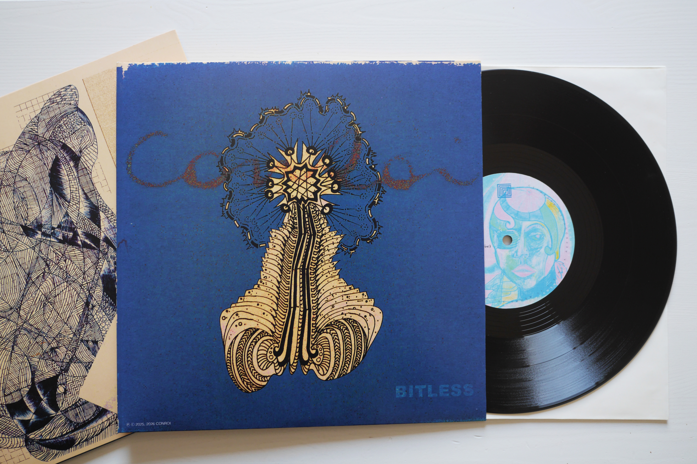
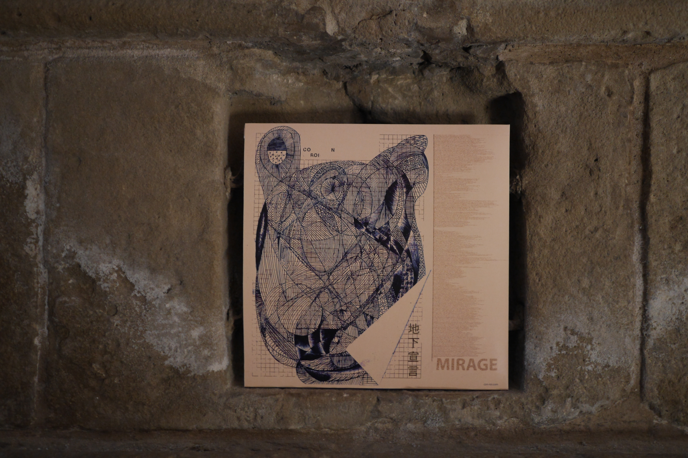
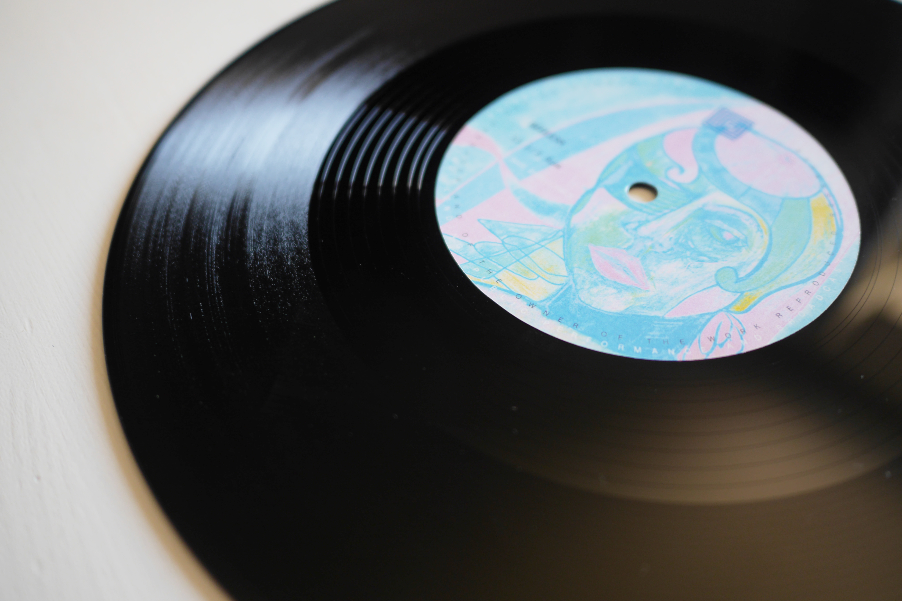
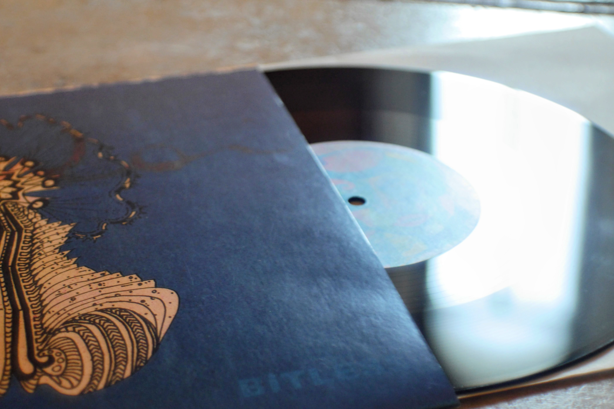
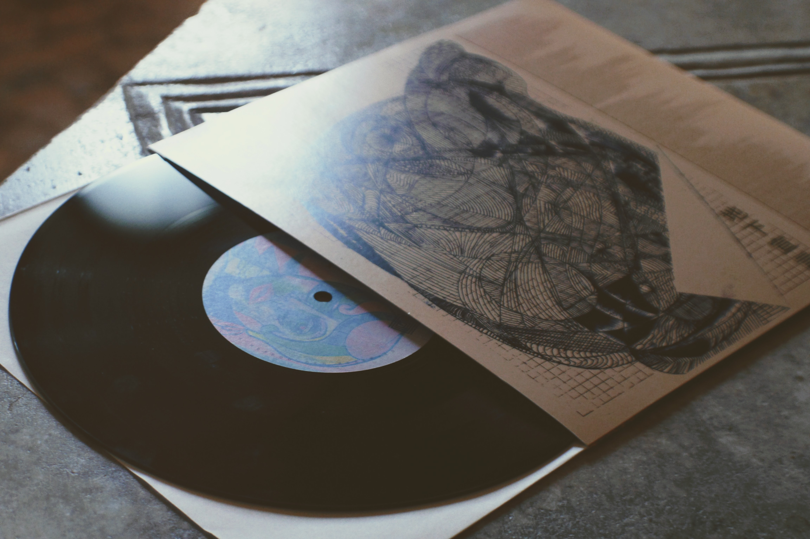

Bitless è una rielaborazione di Beatles4Ever, traccia quattro del primo disco di CONROI. La sua prima mutazione, dopo la sua pubblicazione, assume il titolo Beatless. Qualcosa di senza cuore, senza battito, senza beat. Continuando, la sua ulteriore mutazione ha preso il nome di Bitless — senza bit, a simboleggiare un ritorno alla materia, un'incarnazione.
[ tiratura numerata a mano ]
I titoli delle due tracce compongono un particolare messaggio, non calcolato a priori: BITLESS MIRAGE. Ciò che è senza bit, di materia, rischia di essere un miraggio più di quanto lo sia ciò che vive su uno schermo, in bit.